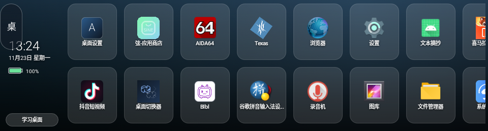
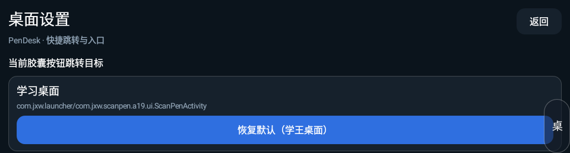
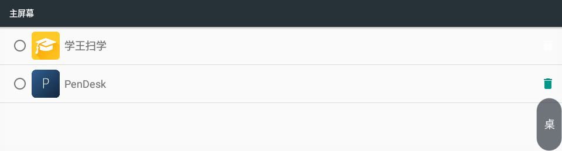
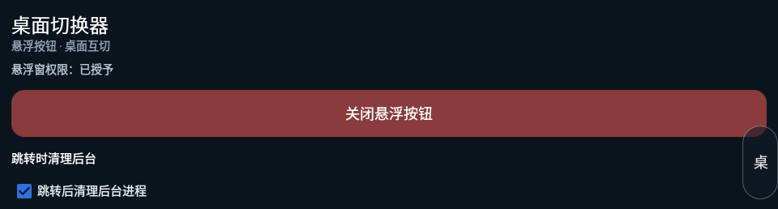
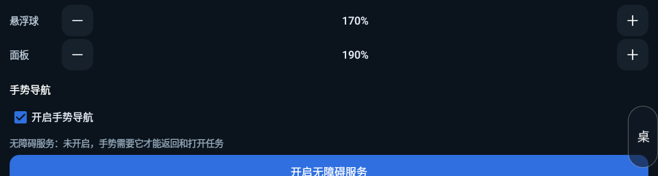

首页
安静，是最好的界面。
打开点读笔，只有时钟、日期和你常用的App。左侧一列时间，右侧横向卡片；竖屏则自动改成顶部时钟加双列卡片。

PenDesk · 首页单击图标，直接进入
不用长按、不用二次确认。点读笔的屏幕小，交互就该一步到位。
为异常比例重新排版
不是把手机桌面拉宽。卡片数量、图标尺寸、行列间距都按258×960算过。
长按整理，隐藏也能找回
长按弹出应用菜单：应用信息、从桌面隐藏。隐藏的应用可在菜单里恢复。
功能
小屏幕，也能很完整。
该有的都有，不该出现的都不出现。没有广告位，没有资讯流，没有强制更新。
奇葩比例适配
横屏左侧时钟列加右侧横向卡片，竖屏顶部时钟加双列卡片。转屏后自动换布局，不挤不裁。
单击即进
点图标就是打开应用，不做多余确认。长按才进入整理菜单，触控目标和间距都放大过。
真正的桌面设置
应用网格第一格就是「桌面设置」，长按左侧时钟也能进。所有选项都在一个能滚动的页面里。
胶囊跳转可配置
左下角胶囊不再写死「学习桌面」。选中任意已安装应用，点一下即可设为跳转目标。
可选默认桌面
设置里直接进入系统「主屏幕」页，把PenDesk或学王设为默认。HOME候选默认关闭，不偷偷抢桌面。
手势与悬浮球
配套桌面切换器：贴边悬浮球、选中再确认、左右内划返回、底部上划最近任务，互不打架。


桌面设置
跳转目标、
默认桌面，都能改。
设置不是一个摆设。它接管了原来写死的入口，也把系统默认桌面的选择搬进了桌面。
- 胶囊跳转目标可选任意已安装应用，默认仍是学王桌面。
- 「默认桌面」卡片显示当前系统主屏幕，点按钮进入系统选择页。
- 若选回学王，再进入PenDesk设置会自动关闭HOME候选，避免抢占。
配套应用
一个球，
在桌面之间来回。
桌面切换器是独立安装的小工具。悬浮球贴边收起，点开是桌面图标；再点一次确认，才会跳转。
- 悬浮球与面板大小分开调节，位置可拖，点面板外自动收起。
- 选中桌面高亮，再点一次跳转；可设置跳转时清理后台。
- 支持左右内划返回、底部上划最近任务，并给悬浮球更高优先级。


安装
三条ADB命令，
装进点读笔。
不需要root。装完后按Home仍然回学王；想换默认桌面，再去设置里点一下。
打开USB调试
点读笔连电脑，确认adb devices能看到设备。驱动和授权按机型要求处理。
推送并安装
部分机器直接adb install会报“remote Is a directory”，用push加pm install更稳。
设为默认桌面（可选）
打开PenDesk，进入桌面设置，点“选择默认桌面”，在系统页选中PenDesk。
# 1. 确认设备 adb devices # 2. 推送APK并安装 adb push pen-desktop-1.0.6.apk /data/local/tmp/PenDesk.apk adb shell pm install -r /data/local/tmp/PenDesk.apk # 3. 打开PenDesk（可选） adb shell am start -n aerial.pen/.MainActivity
下载
现在，换一块桌面。
APK和源码都在GitHub。签名包直接装，源码用Android Studio打开即可编译。
PenDesk
给低分辨率安卓点读笔的第三方桌面。MIT许可，代码由豆老师编写；受Aerial TV启发，独立实现，未拷贝上游源码。